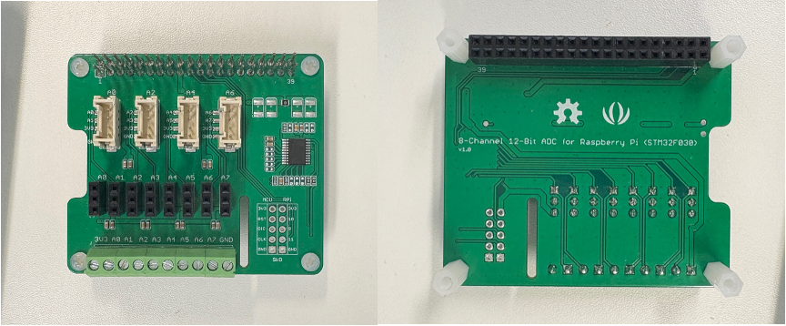
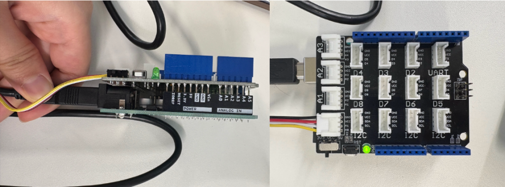
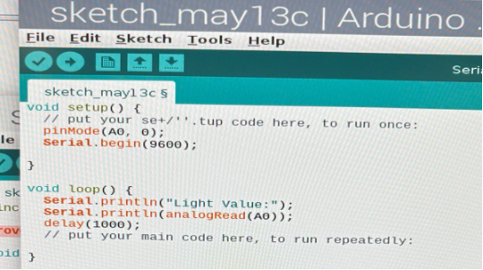

In this phase of exploration, our goal is to connect a photosensitive sensor to read ambient light intensity in real time and output precise numerical data on a Raspberry Pi, which will be used to control the interaction logic in our project.
Initial Attempts and Issues
Initially, we directly connected the sensor to the Raspberry Pi’s GPIO interface, but quickly identified a critical problem: the Grove Light Sensor is an analog output device, while the Raspberry Pi’s GPIO pins do not support analog input. As a result, we could only use simple digital logic to judge states like “bright” or “dark,” failing to capture continuous light intensity values. This non-standard and imprecise judgment method couldn’t meet our requirements for interactive control.
Solution Approach 1: Introducing STM32 as an ADC Module
To address the analog signal reading issue, we attempted to introduce the STM32F030F4P6 chip as an external ADC (Analog-to-Digital Converter), converting the photosensitive sensor’s analog signals to digital signals and sending them to the Raspberry Pi via serial communication.

Although the STM32 offers the required ADC functionality, our practice revealed:
- The chip requires specialized programming tools for firmware flashing.
- Writing compatible firmware programs exceeded our current knowledge scope.
- The overall debugging process was complex, prone to unstable communication issues.
After evaluation, we decided to abandon this approach.
Solution Approach 2: Using Arduino + Grove Base Shield
We shifted to a more reliable approach:
- Employed Arduino as an intermediary hardware, connecting the photosensitive sensor to its analog input pins.
- Wrote simple code in Arduino to read analog values in real time.
- Used the Grove Base Shield v2.1 for convenient sensor connection.
- Finally, linked Arduino to Raspberry Pi via USB serial port, and read precise light intensity data on Pi through serial communication.

This solution avoids the technical barrier of STM32 programming while ensuring continuous and accurate sensor data.

What I gained
- Further understood the functional differences between Raspberry Pi and Arduino: Pi excels in computing and logical processing, while Arduino is suitable for analog signal reading and real-time control.
- Mastered the method of data transmission between the two via serial communication.
- Learned to evaluate multiple technical solutions and make trade-offs based on practical capabilities and project requirements.
- Realized that hardware system integration is not just about circuit connection, but also requires rational module division and data flow design.